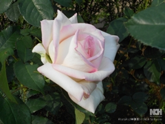
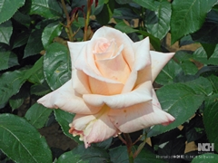
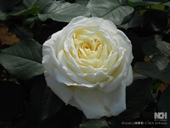

一般歯科
むし歯治療は、「出来るだけ削らず」「痛くなく」「目立たない」「長持ちする」を第一義に考えています。
小児歯科
お子様の成長過程にとって大切な歯をしっかり守るように、そのためのサポートをさせていただきます。
インプラント
インプラント治療は、従来の歯科治療とは全く別物と考えています。その専門性と予後の不確実さを考えて、当院では大学病院などの高度医療施設をご紹介しております。ご希望される方は、お気軽にご相談ください。
予防歯科
「治療より予防」というのが現在では当たり前になっています。むし歯だけでなく、歯周病の予防のためにも一度来院されてカウンセリングを受けられることをお勧めします。
矯正歯科
矯正治療も現在は、子供さんだけでなく成人の方にも行われています。一本の歯を少し動かして歯を削るのを極力少なくするという治療も盛んに行われています。また、将来の歯並びの悪化を防ぐための「予防矯正」も行っております。本格的な矯正治療などは、信頼できる専門医や大学病院をご紹介しております。
審美歯科
バリバリ削って、意味もなくセラミックの歯をかぶせるのが「審美歯科」だと勘違いしている人を時々お見掛けします。これは大変な見当違いだとご理解ください。本当の「審美歯科」は、出来るだけダメージを与えずにきちんと機能して自然に見えるもののはずです。当院はそういった「審美歯科」を追及してきました。